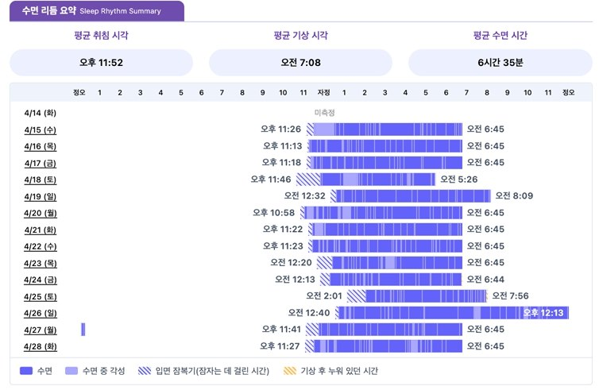

Chronotype
Looks at your sleep-preference rhythm — morning type, evening type, and so on — based on your bed/wake patterns.
Chronotrack
14 days of looking at your sleep-wake rhythm

Sleep problems aren't explained simply by how many hours you slept.
It's also important to look at your sleep-wake rhythm — when you fall asleep and wake up, how consistent your sleep timing is, and how different your sleep is between weekdays and days off.
Chronotrack records breathing sounds during sleep with a smartphone to analyze your real-life sleep pattern over 14 days, looking at chronotype, sleep regularity, social jetlag, and sleep duration.
Sleep regularity is an important sleep characteristic that can be evaluated separately from sleep duration, and indicators such as the Sleep Regularity Index (SRI) are used in research.
Looks at your sleep-preference rhythm — morning type, evening type, and so on — based on your bed/wake patterns.
Quantifies how consistently your sleep-wake pattern repeats over the 14-day period.
Checks the difference in sleep timing that arises from your schedule — for example, between weekdays and days off. Social jetlag describes the mismatch between the sleep schedule required by social obligations and your own biological sleep rhythm.
Checks your average bedtime, wake time, and sleep duration over the 14 days.
We take a history of your current sleep symptoms and lifestyle pattern, and administer the PSQI together if needed.
Based on the medical team's judgment, your sleep-wake rhythm is recorded for 14 days.
Your sleep pattern is recorded in your usual living environment, without visiting a separate testing facility.
Chronotype, Sleep Regularity Index, social jetlag, and average sleep duration and bed/wake times are checked.
The measurement results and your current sleep symptoms are reviewed together, and sleep habits and treatment direction are adjusted as needed.
In insomnia treatment, it's useful to look not only at how the patient feels about their sleep, but also at how their real-life sleep pattern changes.
Comparing 14-day Chronotrack data before and after treatment can be used to track the following changes.
It can be used as a supportive way to check changes in sleep pattern before and after sleep medication treatment.
However, the effect of medication isn't judged from the Chronotrack results alone — sleep symptoms, daytime functioning, medication use, and the clinical evaluation are all considered together.
This refers to the phenomenon where sleep timing shifts due to differences in schedule between weekdays and days off — for example, having to wake up early on weekdays but going to bed and waking up later on weekends.
Bed at 00:00 → Wake at 07:00
Bed at 02:00 → Wake at 09:00
If sleep timing shifts later like this, social jetlag can occur between weekdays and weekends. Social jetlag is generally quantified using measures such as the difference in sleep midpoint between workdays and days off.
Q. How many days does Chronotrack measure?
It measures for 14 days. Rather than looking at just one night's sleep, it looks at your real-life sleep-wake pattern over 14 days.
Q. What is sleep regularity?
It refers to how consistently your daily sleep-wake pattern — bedtime, wake time, and so on — repeats. One indicator that quantifies this is the Sleep Regularity Index (SRI).
Q. Does high social jetlag mean I have a sleep disorder?
No. Social jetlag itself doesn't mean you have a condition. However, if your sleep duration differs greatly between weekdays and days off, it can be a useful reference for understanding a mismatch in your sleep-wake rhythm.
Q. Is being an evening type a problem?
No. Being an evening type by itself doesn't mean you have a sleep disorder. What matters is whether your sleep rhythm fits well with your actual daily schedule, and whether this leads to sleep deprivation or reduced daytime functioning.
Q. Can I be tested while taking sleep medication?
Yes. It can be used as a supportive way to track changes in sleep pattern before and after sleep treatment. However, the effect of medication isn't judged from the test result alone — sleep symptoms, daytime functioning, and medication use are considered together.
Q. What's the difference between PSQI and Chronotrack?
PSQI is a questionnaire that evaluates your subjectively perceived sleep quality and sleep problems over the past month. Chronotrack uses data to check your actual sleep-wake pattern in real life over 14 days. Using both together lets you look at your subjectively felt sleep problems alongside your actual real-life sleep pattern.
We don't judge sleep problems from a single indicator.
Insomnia, fatigue, daytime sleepiness, and reduced concentration can be related not only to sleep quality, but also to sleep apnea, sleep-wake rhythm, lifestyle pattern, stress, and other factors.
At MoonGyeol, we first check your symptoms and lifestyle pattern, then selectively use the following as needed to comprehensively look at your current sleep status.
Subjective evaluation of sleep quality
Screens sleep breathing and moderate-to-severe sleep apnea
Evaluates 14-day sleep-wake rhythm and sleep regularity
We'll look at your current sleep symptoms and condition together and suggest the assessment you need.